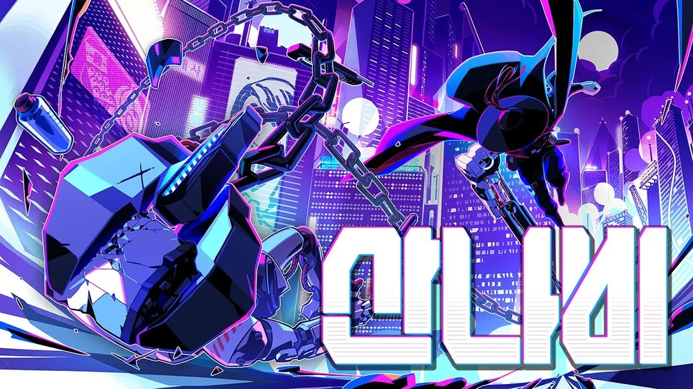

서비스 소개
아직 경험하지 못한 게임을 접해보는 공간
-
게임 제목
게임의 제목과 메인 일러스트 소개입니다.
-
한 줄 소개
주인장의 게임 전체에 대한 한 줄의 코멘트입니다.
-
주요 캐릭터
게임 속 큰 비중을 차지하는 등장인물들을 소개합니다.
-
게임 플레이 방식
간단한 게임 진행 방식을 설명해드려요.
-
게임 기본 정보
한 줄 소개보다 더 자세한 게임의 대한 기본적인 설명입니다.
추천 게임
-
산나비

-
한 줄 소개
퇴역 군인의 마지막 임무이자 복수기
-
주요 캐릭터
퇴역 군인, 금마리
-
게임 플레이 방식
사슬팔을 이용해 빠르고 민첩하게 움직이며 적을 무찌르고, 위협에서 벗어나세요.
스테이지를 넘길 때마다 새로운 기술을 익히고 화려한 액션을 펼쳐보세요.
-
게임 기본 정보
기계팔로 무장한 퇴역 군인이 되어 초거대 재벌의 부패한 사유 도시를 오르세요.
사이버펑크 디스토피아를 배경으로 펼쳐지는 역동적이고 스타일리쉬한 2D 사슬액션 어드벤처 플랫포머 게임, 산나비입니다.
게임을 즐기는 방법
- 판매 플랫폼 이동: Steam (닌텐도가 있다면 닌텐도e숍)
- 산나비 검색 및 구매후 설치
- 플레이 버튼 누르기